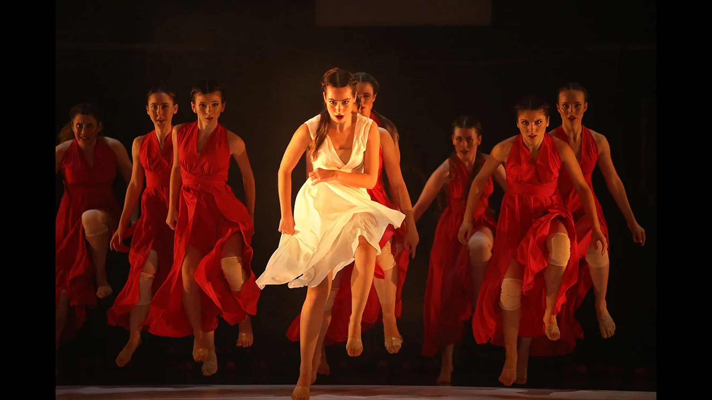

Teatru-dans · din 1993 · Sibiu
Corpul
devine limbaj.
Microbis este compania de teatru-dans a Casei de Cultură a Studenților Sibiu — treizeci și trei de ani în care generații de studenți au transformat mișcarea, muzica live și teatralitatea într-un limbaj scenic propriu.
Pe scenă acum
Ritual și Mere Roșii sau ce ar fi putut fi o tragedie grecească
Un univers scenic construit din gesturi sacadate, ezitante și repetitive — vinovăția moștenită, conformismul și eliberarea, spuse prin mișcare. Regia și coregrafia: Alex Wolff. Spectacolul a deschis, în sală plină, ediția a doua a Festivalului de Dans „Hugo Wolff".
Vezi spectacolulMoștenirea vie
Sibiul devine, an de an, capitala dansului studențesc
Din 2024, Casa de Cultură a Studenților Sibiu organizează Festivalul de Dans „Hugo Wolff" — un omagiu adus fondatorului Microbis și, în același timp, o platformă anuală pentru trupele de dans studențești din toată țara. Microbis deschide festivalul, ca formație-gazdă, în fiecare ediție.
Povestea lui Hugo Wolff„Un dansator și balerin de o ținută și frumusețe aparte, un coregraf inspirat, care a unit generații de tineri în jurul ideii de frumos." Constantin Chiriac, director Teatrul Național „Radu Stanca" Sibiu — despre Hugo Wolff, fondatorul MicrobisCitește presa
Recrutare
Ești student în Sibiu și vrei să dansezi?
Microbis se reînnoiește în fiecare an cu studenți dornici să spună ceva prin mișcare. Nu ai nevoie de experiență de scenă — ai nevoie de curaj.
Vezi condițiile de audiție